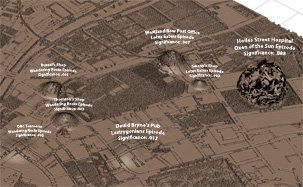

Mapping literary accounts of the modern city in 3D.
Explore James Joyce's Dublin as its never been seen before.
Dislocating Ulysses is a digital humanities project developed at the University of Victoria for English 507 in the spring of 2013. The project produces a three-dimensional map of Dublin as it is represented in James Joyce’s Ulysses. The 3D map visualizes key areas of the city described in Joyce’s novel, expressing which sections of the city are given significant attention by Joyce and which are ignored. The significance of each area is calculated based on the relative number of words used to describe it in the novel (divided against the total number of words in the novel to produce a significance ratio). Each area described by Joyce is raised according to its relative significance; more significant areas are raised higher than lower ones.
The findings of this project are twofold. First, the project charts a new method for digitizing flat archival objects by transforming them into 3D objects. The 3D map is produced from a 1925 survey map of Dublin housed in special collections at the University of Victoria. Rather than using digitization to reproduce archival holdings as they already exist, this project’s Z-Axis method warps and transforms digitized objects using data mined from literary texts. Doing so reveals the historical and political biases built into the original artifact; in this case, the historical map of Dublin was created as part of an English ordinance survey of its Irish colony. The survey used the mathematical control of geography (through triangulation) as an act of imperialism, used to regulate and manage postcolonial cities. The 3D map both reveals and visually critiques this history by using the computational control of geography to explode the gridded space of the historical map. The warped spaces in the 3D map visually critique the historical mapping practices used to produce the original archival map. Second, the 3D map allows literary scholars to see which sections of Dublin are privileged by Joyce’s novel and which are ignored. Initial findings suggest that Ulysses, a novel purported to represent marginal characters, focuses primarily on wealthy areas of Dublin (ignoring poorer neighborhoods). Exploring which areas of the city are privileged by modernist novels allows scholars to examine the historical, cultural, and political biases of the author. In short, the Z-Axis map lets scholars visualize how modernist novels write the modern city. Further findings will be shared in a publication on the project (currently under review).
This project was designed for Engl 507 and the Long Now of Ulysses Exhibit that debuted in June 2013 at UVic’s Maltwood Gallery. It asked exhibit attendees to consider a reader’s geotemporal experience of Ulysses. As the many mapping projects based on Ulysses suggest, Joyce’s text is highly mappable and fully immersed in the idea that cartography is a way of knowing (Hegglund 164). Our 3D map differs from those projects by asking how can we use mapping to understand a reader’s experience of the text as opposed to characters’ experience of time and place in the narrative. The project also spurs the following questions: Can we locate a reading experience? Can we assign a temporal value to a reading experience? Can we trace and can we feel the process of reading?
As is outlined in the Z-Axis workflow, we chose to use word count as a way to measure the “time” a hypothetical reader would spend in a given location in Ulysses’ Dublin. This, of course, provides a flawed sense of “temporality” given that word length, concept complexity, and as one study suggests, even head tilt (Firth 52), affect the rates at which one reads. We chose to use word count as a fixed measure with the awareness that our methods would only provide one possible representation of the experience of reading Ulysses.
This map uses 3D modeling software to represent the reading experience of Ulysses onto the University of Victoria’s archival, 1925 map of Dublin. We chose the 1925 map of Dublin for two reasons. First, it was the map that most closely corresponded to the publication date of the first volume edition of Ulysses. Second, it was also the most detailed archival map of Dublin in the University of Victoria’s Special Collections archive.
Though this project was designed for Engl 507 and the Long Now of Ulysses Exhibit, it has since been adopted as a versioning method for the Modernist Versions Project (MVP). The Z-Axis method allowed the MVP to expand how it was able to version texts, ultimately leading the MVP to begin versioning the way modernist texts write modernist city centers. Currently, the MVP is using the Z-Axis method to version the Paris’ of Djuna Barnes’ Nightwood and Jean Rhys’ Good Morning, Midnight and Quartet. Future plans involve versioning London. The project’s expansion to cover other modernist works and other modernist cities shows how the Z-Axis method is rooted, not only in digital humanities research and practice, but in humanities based research as well. The maps produced are argumentative objects that ask for scholarly engagement and interpretation. In other words, the object of the maps is not to make a single argument, but rather to make possible multiple arguments by multiple scholars and to open new lines of critical inquiry into modernist texts and their relationships to place.
One of the questions we were concerned with throughout the course was “what can we learn through the remediation of analogue, archival materials through digital manipulation?” Another, related question was “how can we make this process that links the physical archive with digital methods meaningful?” In part, we attempted to address these questions by using digital methods to bring the material out of the archive and into the public sphere of the exhibit. We also attempted to make the archival material new by using the material in our methods of distortion. For example, as opposed to simply photocopying the map, we made a 3D model that would allow people to feel the streets of Dublin in order to engage a new way of knowing the space of Dublin. We added another temporal and spatial layer to the map by using the archival image to locate the text and to raise areas on the map in proportion to the word count (as a measure of the “time” a reader would spend) in the region.
Michael Seidel begins his study of Ulysses and geography by noting Kant’s observation that “the human mind appeals to geography for spatial orientation as readily as it appeals to history for temporal orientation” (ix Seidel). This project attempts to unite both the temporal and the geospatial in order to rethink Ulysses in relation to the space of Dublin, the history of Dublin and the objects in the Exhibit, as well as the reader of Ulysses. This section explores how “Dislocating Ulysses” can be understood through the tri-focal lens of digital humanities scholarship, cartographical and non-digital literary scholarship of Ulysses.
Two primary influences of this project, in terms of digital humanities scholarship, are Franco Moretti’s Graphs, Maps, Trees and Galey and Ruecker’s “How a Prototype Argues.” Moretti focuses on the ways distant reading practices can disrupt our ways of understanding texts and hence come to new ways of exploring texts. This form of literary analysis that moves beyond the close reading practices of New Criticism is not, as Moretti points out “an obstacle, but a specific form of knowledge” (Moretti 1). Moretti describes distant reading as a critical practice “in which the reality of the text undergoes a process of deliberate reduction and abstraction” (1). While Moretti’s work focuses on large corpuses of texts, we are employing his notion of “deliberate reduction and abstraction” of the text through our 3D map of Ulysses in order to come to a specific, if not new way considering the text. Engaging with traditional, literary criticisms that highlight the quotidian aspects of Ulysses, the importance of time, and importance of space in the novel, the project seeks to rethink the way the text could be represented in an exhibit space.
In terms of cartographical criticism, this project builds upon a long tradition of scholars who, as Jon Hegglund notes, “have been all too eager to plot Ulysses onto a map of Dublin” (165). The history of the cartography of Ulysses is readily accessibly online in analogue formats such as Seidel’s analysis of Joyce’s mapping of the Odyssey onto Ulysses’ Dublin to digital formats ranging from Visit Dublin’s printable PDF titled “Ulysses Map of County Dublin,” which charts Bloom’s journey throughout his day to Boston College’s “Walking Ulysses,” an interactive map that allows users to trace the paths of Stephen Dedalus and Leopold Bloom. The “Dislocating Ulysses” project, through its two components intends, not to duplicate such expert work on cartographical representations of Ulysses’ “‘real-world’ physical space” (Hegglund 164), but rather intends to rethink alternate ways in which the novel and by proxy the Long Now of Ulysses Exhibit can and do engage with time and space.
At the same time the project is rooted in digital humanities works and methodologies, it is also rooted in the literary criticism of scholars such as William Schutte, Jon Hegglund and Declan Kiberd. In his study of cartographical rhetoric in Ulysses, Hegglund makes a point that the very act of mapping within the text is seen as a way of knowing. He writes, “Joyce seems to have been aware of the particular discursive power of the cartography within a larger economy of knowledge, as the relationship between the topographical precision of Ulysses and the rhetoric of cartography is more than coincidental” (Hegglund 164). The project engages in the Joycean tradition of knowing through mapping by disrupting traditional mapping strategies. Z-Axis research disrupts traditional mapping strategies by 1) suggesting that reading experiences can be mapped, visualized, and felt, and 2) suggesting that digital and physical models in fact, as Ruecker argues, make arguments in and of themselves.
|  | ||
|---|---|---|
| View the Riverwalk and the Commercial District | View Trinity College Dublin and Holles Street Hospital | View the Red Light District (Nighttown) |
|
View the original 1925 Survey Map (reproduced from UVic Special Collections) |
Explore a low-resolution sample of 7 Eccles street (Leopold Bloom's home). Google Chrome recommended for viewing. |
|---|
| Alex Christie | Katie Tanigawa |
|---|
{kind=link}
{kind=link}
{kind=link}
{kind=link}